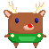

Cadeaux/Feuilles/Oranges/Pommes : 5 points. (50%)
Sucres d'orges/Fleurs/Citron/Raisins : 10 points. (25%)
Éclairs/Vent/Soleils/Pluie : fait perdre une vie. (25%)
Projet Original
Développeuse Du Dimanche : YouTube
Développeuse Du Dimanche : Twitter
Ce projet est sous licence Creative Commons Attribution Non Commercial 4.0 International avec l'élaboration de certaines textures et idées (entre autres) de la Développeuse Du Dimanche.
